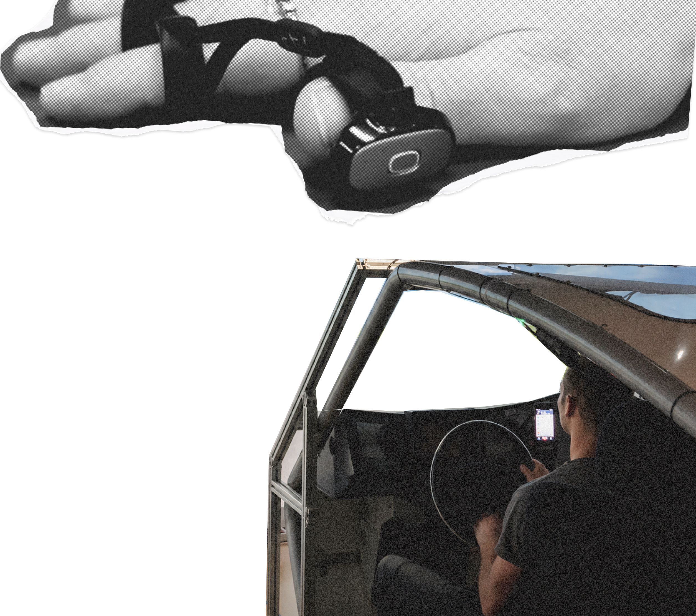

User
Understanding
studies & data collection
Throughout my academic and professional work, I have gained experience with a broad range of user research methods and analysis techniques. My projects included driving simulator studies, eye-tracking experiments, content analyses, statistical evaluation of large consumer datasets, and qualitative coding of online reviews.
I worked with experimental and quasi-experimental study designs, survey research, behavioral measures, and inferential statistics to generate evidence-based insights for user-centered design. My experience covers both controlled laboratory studies and the analysis of real-world user behavior, enabling me to combine rigorous research methods with practical UX decision-making.
google analytics &
social media dashboards
Experience with Google Analytics and a range of social media dashboards, including Meta Business Suite, Instagram Professional Dashboard, TikTok Analytics, and YouTube Studio, forms part of a regular workflow focused on monitoring content performance, understanding user behavior, and evaluating engagement metrics across platforms.
I use these insights to assess reach, optimize content strategies, and make data-driven decisions aimed at improving engagement and audience growth. My background also includes applying analytics in a professional context to better understand user behavior and refine digital experiences based on measurable performance data.
user data analysis
My experience in Customer Experience (CX) research and data-driven market analysis within the automotive industry includes statistical analysis of consumer data among luxury car brand customers on behalf of BMW, contributing to insights for strategic decision-making.
Additional work includes the analysis of large-scale industry datasets such as the Deloitte Global Automotive Consumer Study, translating consumer behavior patterns into actionable findings for market positioning and product strategy. In addition, familiarity with initiatives like Catena-X has been developed, focusing on data ecosystems and collaboration across automotive stakeholders.
Across these projects, the focus has been on transforming complex consumer and market data into clear insights that support evidence-based decision-making in CX and automotive strategy.

